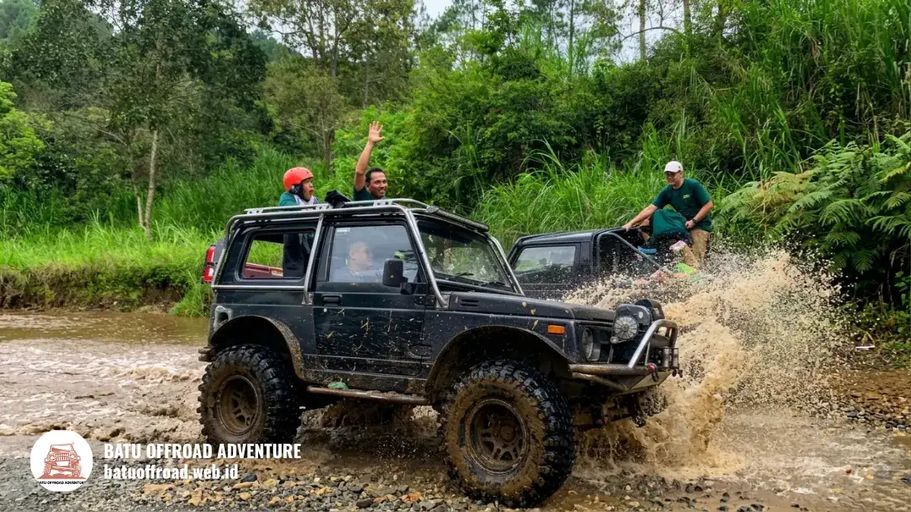

Pengalaman Nyata Menjajal Jeep Adventure Batu Malang
Pengalaman jeep adventure Batu Malang umumnya berupa perjalanan seru melewati jalur pegunungan, berhenti di titik pandang, dan menikmati kebersamaan rombongan dengan pendampingan pengemudi lokal yang berpengalaman.
Highlights Pengalaman Peserta
- Perjalanan biasanya dimulai dengan berkumpul, pengarahan keselamatan, lalu berangkat sesuai rute.
- Rombongan cenderung menikmati sensasi guncangan, pemandangan, dan sesi foto bersama.
- Pengemudi lokal berperan sebagai pemandu sekaligus penjaga keselamatan.
- Kesiapan fisik dan perlengkapan sangat memengaruhi kenyamanan.
- Catatan ini bersifat gambaran umum dan dapat berbeda pada tiap vendor.
Artikel ini merupakan bagian dari panduan utama Liburan Seru Jeep Adventure untuk Rombongan dan Keluarga.
Seperti apa alur jeep adventure dari awal sampai akhir?
Alur jeep adventure biasanya terdiri dari berkumpul di titik awal, pengarahan keselamatan, perjalanan menyusuri rute, berhenti di titik foto, lalu kembali ke lokasi akhir.
Gambaran rundown yang umum:
- Peserta berkumpul di titik awal (meeting point) dan dicocokkan dengan unit jeep masing-masing.
- Pengemudi memberi pengarahan singkat tentang keselamatan selama naik kendaraan.
- Jeep berangkat menyusuri jalur menuju area perbukitan dan pegunungan.
- Perjalanan berhenti di beberapa titik pandang (viewpoint) untuk berfoto.
- Rombongan melanjutkan rute hingga titik akhir yang disepakati.
- Peserta kembali ke titik awal atau diantar sesuai kesepakatan paket.
Durasi dan jumlah pemberhentian dapat bervariasi sesuai paket. Rombongan yang datang tepat waktu biasanya mendapat jadwal yang lebih longgar untuk berfoto dan menikmati pemandangan.
Apa yang biasanya dirasakan rombongan saat naik jeep?
Rombongan umumnya merasakan campuran sensasi berguncang di jalur tidak rata, kegembiraan bersama, dan kekaguman pada pemandangan pegunungan yang berubah di sepanjang rute.
Kesan yang sering muncul dari wisatawan:
- Sensasi tanjakan dan turunan terasa menyenangkan bagi yang menyukai petualangan aktif.
- Udara sejuk dataran tinggi Kota Batu membuat perjalanan terasa segar dan tidak pengap.
- Suasana lebih akrab karena seluruh rombongan berada dalam satu pengalaman petualangan yang sama.
- Pengemudi yang komunikatif membuat peserta merasa tenang dan aman.

Penumpang melambaikan tangan dengan penuh keceriaan saat jeep menerjang lintasan air
Bagi peserta yang kurang terbiasa dengan guncangan, perjalanan dapat terasa sedikit melelahkan. Karena itu, pemilihan rute yang tepat sangat membantu.
Mengapa pengemudi lokal berpengaruh besar pada pengalaman?
Pengemudi lokal berpengaruh besar karena mengenal medan, menentukan kecepatan yang aman, dan mengetahui titik pandang terbaik sehingga perjalanan lebih aman sekaligus lebih berkesan.
Pengemudi berpengalaman dapat membaca kondisi jalur, cuaca, dan kondisi penumpang. Ia juga dapat menyesuaikan gaya berkendara, misalnya lebih pelan ketika ada anak atau lansia. Komunikasi yang ramah membuat peserta lebih tenang dan menikmati waktu.
Kota Batu memiliki penduduk sebanyak 215.248 jiwa berdasarkan Sensus Penduduk 2020 BPS. Banyak pelaku wisata berasal dari komunitas lokal, sehingga pengetahuan tentang jalur dan kondisi wilayah biasanya diturunkan lewat pengalaman nyata bertahun-tahun.
Apa tantangan yang mungkin muncul selama perjalanan?
Tantangan yang mungkin muncul meliputi debu, guncangan, perubahan cuaca, dan kelelahan, tetapi umumnya dapat dikelola dengan persiapan yang baik serta komunikasi terbuka dengan pengemudi.
Beberapa tantangan dan cara menyikapinya:
- Debu tebal: gunakan masker/buff, kacamata, dan penutup kepala.
- Guncangan keras: duduk stabil dan berpegangan pada bagian kendaraan yang aman.
- Cuaca berubah: bawa jas hujan dan ikuti keputusan pengemudi.
- Peserta cepat lelah: sepakati waktu istirahat singkat di titik pandang.
- Perbedaan selera: tentukan rute berdasarkan kemampuan peserta yang paling rentan.
Sikap saling menyesuaikan membuat pengalaman tetap menyenangkan bagi seluruh anggota rombongan.
Bagaimana agar pengalaman jeep adventure lebih menyenangkan?
Pengalaman lebih menyenangkan bila rute dipilih sesuai peserta, perlengkapan disiapkan matang, jadwal tidak terburu-buru, dan seluruh rombongan mengikuti arahan keselamatan dari pengemudi.
Tips yang membantu:
- Pilih rute sesuai usia dan kebugaran peserta rombongan.
- Berangkat pada waktu yang nyaman dan tidak terlalu siang.
- Gunakan pakaian berlapis dan sepatu tertutup antiselip.
- Bawa air minum secukupnya dan pelindung debu.
- Sepakati sesi foto agar tidak menghambat keseluruhan jadwal rundown.
- Tanyakan sebelumnya apakah dokumentasi sudah termasuk dalam paket yang dipesan.
Bagaimana dokumentasi perjalanan sebaiknya dilakukan?
Dokumentasi sebaiknya dilakukan pada titik pemberhentian yang aman, dengan perangkat terlindungi dari debu, dan disepakati bersama pengemudi agar tidak mengganggu keselamatan perjalanan.
Jangan mengambil foto atau video saat jeep melaju di jalur berat jika posisi tubuh tidak stabil. Manfaatkan titik pandang (viewpoint) untuk foto rombongan. Bila vendor menyediakan dokumentasi, tanyakan format hasil dan waktu pengirimannya.
Bagaimana contoh susunan rombongan yang ideal?
Susunan rombongan yang ideal mengelompokkan peserta berdasarkan kenyamanan, misalnya anak dan lansia di unit yang mengambil rute lebih pelan, dengan satu koordinator yang berkomunikasi dengan vendor.
Contoh pembagian yang dapat dipertimbangkan:
- Keluarga dengan anak kecil berada dalam satu unit agar mudah saling mengawasi.
- Peserta yang menyukai sensasi ekstrem dapat berbagi unit yang sama.
- Koordinator memegang daftar peserta dan nomor kontak pengemudi/vendor.
- Semua unit berangkat beriringan dan berhenti bersama di titik foto.
Pembagian ini membuat perjalanan tertib dan mengurangi risiko peserta tertinggal.
Untuk siapa jeep adventure paling cocok?
Jeep adventure paling cocok bagi keluarga, komunitas, kantor, dan teman sebaya yang ingin liburan aktif, selama kondisi kesehatan peserta memungkinkan dan rute dipilih sesuai kemampuan.
Kelompok yang umumnya sangat menikmatinya:
- Keluarga dengan anak usia sekolah.
- Rombongan kantor untuk kegiatan kebersamaan & gathering.
- Komunitas, reuni alumni, dan rombongan wisata.
- Wisatawan yang mencari aktivitas petualangan berbeda dari wisata biasa.
Peserta dengan keluhan kesehatan tertentu sebaiknya meminta saran profesional sebelum ikut serta.
Kesimpulan
Pengalaman jeep adventure Batu Malang menawarkan sensasi petualangan, pemandangan pegunungan, dan kebersamaan rombongan. Kunci kenyamanan ada pada pemilihan rute, persiapan perlengkapan, serta kepatuhan terhadap arahan keselamatan.
Takeaways Utama:
- Rundown umum meliputi berkumpul, pengarahan, perjalanan, titik foto, dan kembali.
- Pengemudi lokal memengaruhi keselamatan dan kualitas pengalaman.
- Pilih rute sesuai kondisi seluruh peserta rombongan.
- Lakukan dokumentasi di titik yang aman.
- Persiapkan perlengkapan dan konfirmasi jadwal sebelum berangkat.
FAQ
-
Apakah pengemudi jeep memberikan pengarahan keselamatan sebelum perjalanan?
Ya, pengemudi profesional selalu memberikan briefing pengarahan keselamatan dasar, cara duduk yang aman, serta instruksi penting selama menyusuri rute ekstrem. -
Apakah ada waktu khusus yang disediakan untuk foto dan dokumentasi bersama?
Tentu saja. Perjalanan jeep adventure sudah memuat beberapa titik berhenti di spot-spot instagramable populer seperti hutan pinus atau Coban Talun untuk sesi foto rombongan. -
Bagaimana persiapan jika peserta rombongan membawa barang elektronik atau kamera?
Disarankan menyimpan kamera dan telepon genggam dalam tas berresleting atau kantong pelindung kedap air dan debu agar aman dari guncangan serta cipratan lumpur.
Artikel Terkait